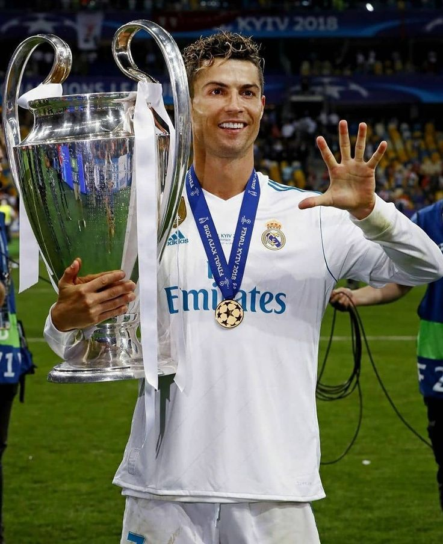

Emmanuel Gazmey Santiago (Carolina, Puerto Rico; 25 de noviembre de 1992), más conocido por su nombre artístico Anuel AA, es un cantante y compositor puertorriqueño de trap latino y reguetón. Criado en Carolina (Puerto Rico), comenzó a grabar música a los catorce años y comenzó a publicarla en línea cuatro años después en 2010, antes de finalmente firmar con la división latina

Benito Antonio Martínez Ocasio (Almirante Sur, Vega Baja, Puerto Rico; 10 de marzo de 1994), conocido artísticamente como Bad Bunny, es un cantante, compositor, productor musical y luchador profesional puertorriqueño.

Cristiano Ronaldo dos Santos Aveiro (Funchal, Madeira; 5 de febrero de 1985), conocido como Cristiano Ronaldo, es un futbolista portugués. Juega como extremo izquierdo o delantero y su equipo actual es el Al-Nassr F.
